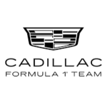
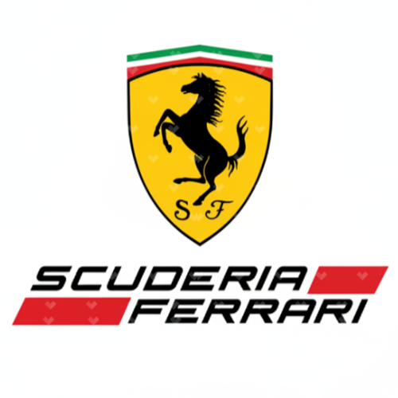
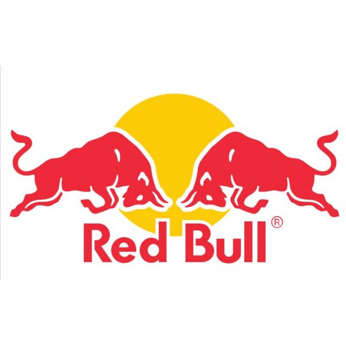
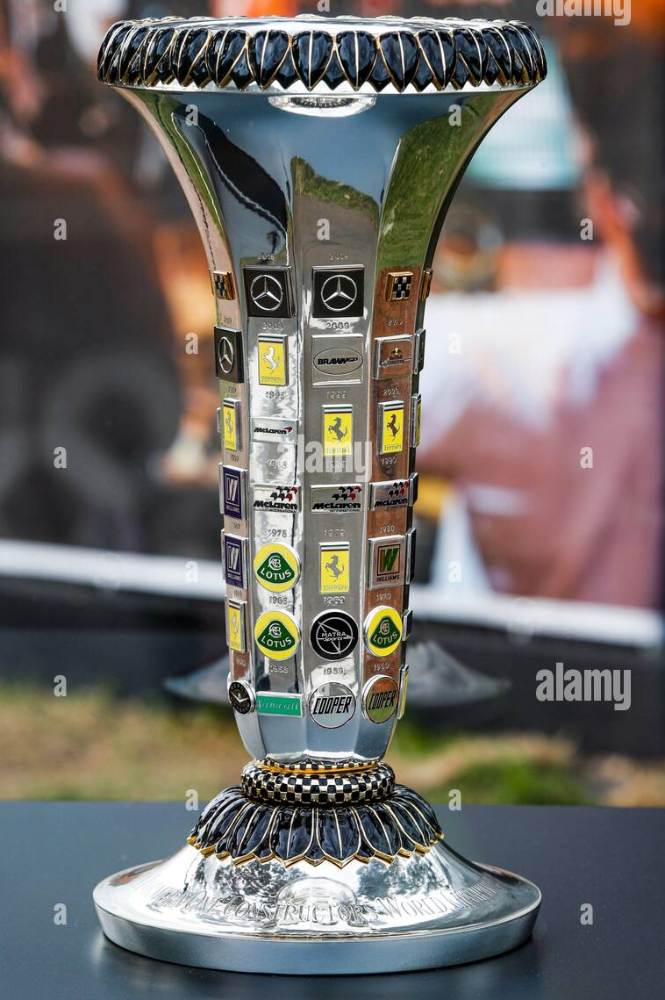

Panoramica generale della stagione 2026
- Inizio: 8 marzo 2026 (Australia)
- Fine: 6 dicembre 2026 (Abu Dhabi)
- Gare totali: 24
- Weekend Sprint: 6 previsti
- Novità regolamentari: cambiamenti tecnici significativi che potrebbero rimescolare le gerarchie.
Calendario completo dei Gran Premi 2026
- GP Australia — 6-8 marzo
- GP Cina — 13-15 marzo
- GP Giappone — 27-29 marzo
- GP Bahrain — 10-12 aprile
- GP Arabia Saudita — 17-19 aprile
- GP Miami — 1-3 maggio
- GP Canada — 22-24 maggio
- GP Monaco — 5-7 giugno
- GP Spagna — giugno (data variabile)
- GP Austria — giugno/luglio
- GP Gran Bretagna — luglio
- GP Ungheria — luglio
- GP Belgio — luglio/agosto
- GP Paesi Bassi — agosto
- GP Italia (Monza) — settembre
- GP Azerbaigian — settembre
- GP Singapore — settembre
- GP USA (Austin) — ottobre
- GP Messico — ottobre
- GP Brasile — novembre
- GP Las Vegas — novembre
- GP Qatar — novembre
- GP Abu Dhabi — 6 dicembre (finale)
Perché la stagione 2026 è importante
- Introduce un nuovo regolamento tecnico che cambierà aerodinamica e power unit.
- Segna l'ingresso o il ritorno di nuovi costruttori e partnership motoristiche.
- È una delle stagioni più lunghe della storia, con un calendario molto intenso.




